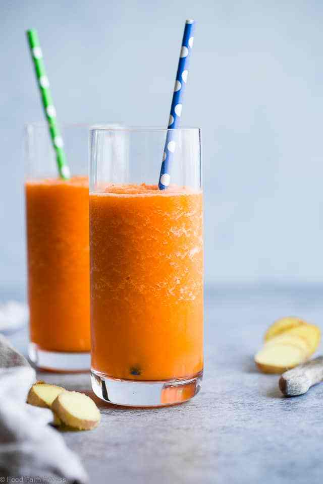

Oranges are a great source of vitamin C. One orange offers approximately 116.2 per cent of the daily value for vitamin C. Good intake of vitamin C is associated with a reduced risk of certain cancers as it helps to get of free radicals that cause damage to our DNA.
Vitamin C, which is also vital for the proper function of a healthy immune system, is good for preventing colds and preventing infections.
Anti-oxidants in oranges help protect skin from free radical damage known to cause signs of aging. An orange a day can help you look young even in your 60s!
As the weather plummets and the cold winter sets in, it is essential to keep your immune system fighting fit. There’s no better way to achieve this than by enjoying a thick and creamy orange smoothie, filled with a multitude of vitamins that will not only keep your taste buds tingling but also, give your body the boost it needs to keep those pesky flu’s and cold away this Christmas.
Here at Fruit Bible we have created this wonderful warm and rich orange smoothie that makes a change to your typical hot chocolate.
Sweet potatoes are known for being rich in antioxidants, great for promoting gut health, vision and brain functionality. Not only this, they are a main source of beta-carotene which converts into vitamin A when consumed. Vitamin A is vital for strengthening your immune system. Not forgetting, sweet potatoes are rich in carbohydrates which keep you fuller for longer and give you the energy you need to keep fight through the dark winter days.
Turmeric and ginger both contain great anti-inflammatory properties. As the cold sets in, this can leave your skin dry which may lead to break outs. Drinking or consuming turmeric or ginger every day will keep your skin glowing and reduce any angry spots that arise due to the cold weather. In addition, the anti-inflammatory agents will reduce the risk of nausea or digestion related illnesses.
Not only are oranges delicious and one of the most popular fruits in the world, they also a fantastic source of Vitamin C. As aforementioned, our immune systems love Vitamin C and it is essential to keep our immune system strong to fight off any nasty bacteria. Add a healthy amount of oranges to any smoothie and you’ll be sure to coast though the winter without depending on a pack of tissues.